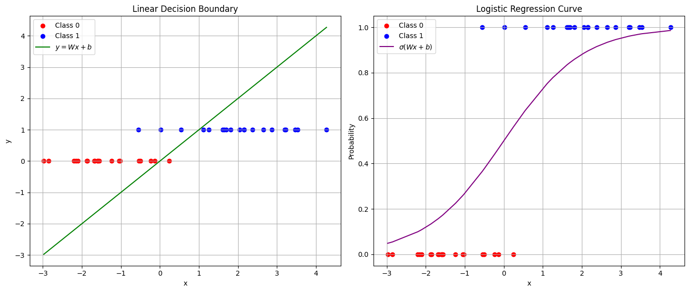
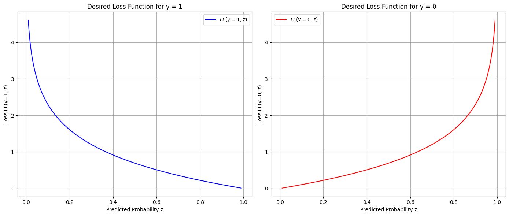
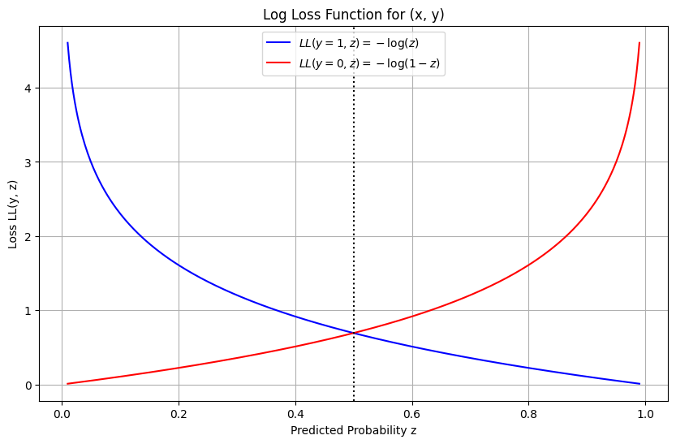
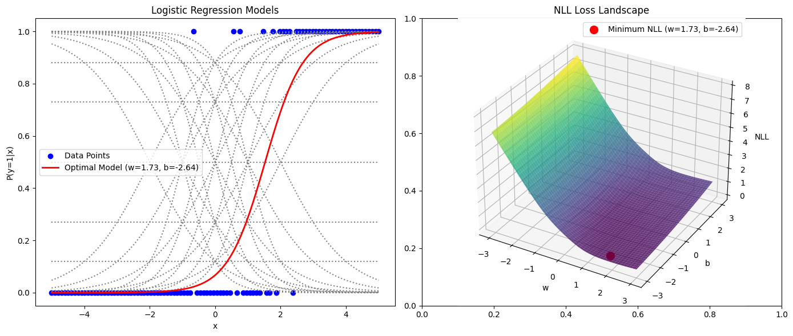
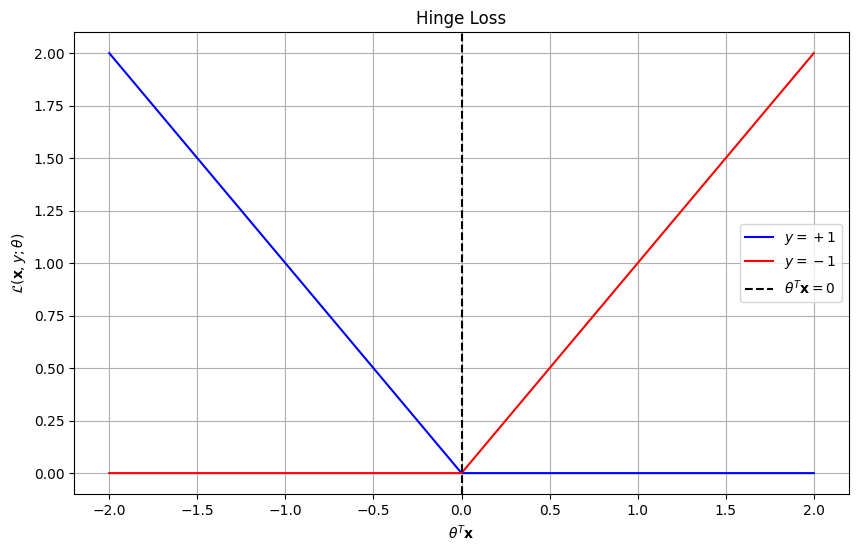
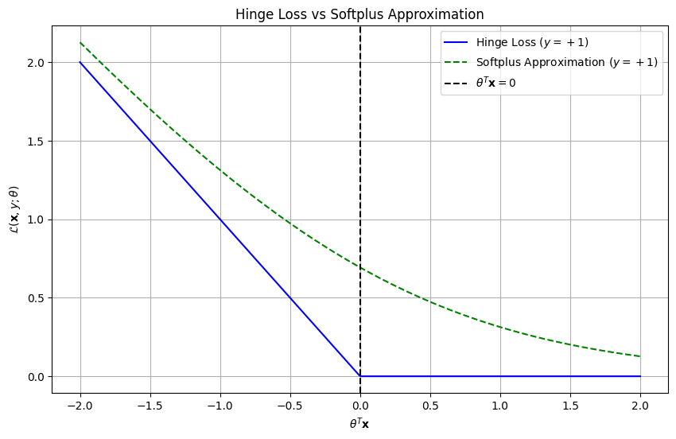

Dr. Ahmad Mustafa, Dr. Motaz Alfarraj, Dr. Ashraf Alattar, Dr. Chen Zhou
with remarkable contributions include: Kuo-Wei Lai, Wuyang Du, Shiva Mahato, Michael Zhou, Ninghan Zhong
: All content of these notes are part of this course at Georgia Tech. Any re-use or distribution is not permitted without pre-approved permission. All these notes belong to, created by, and copyrighted for Ghassan AlRegib and Mohit Prabhushankar, Georgia Tech, 2021–2028.
: These lecture notes are licensed under the Creative Commons Attribution-NonCommercial-ShareAlike 4.0 International License.
: Please submit any errata you find using the following form: Errata Form for FunML Textbook or visit: https://forms.office.com/r/fbg9dMWPgY
1.1 Recap
In the previous lecture, we began discussing classification algorithms. We began by defining classification algorithms in terms of input mappings to discrete outputs and discussed some important terminology for machine learning (sample, feature, target class, etc). This discussion continued with identifying types of classification (case-based vs model-based, feature-based vs end-to-end, etc) and how these types differed. Finally, we were introduced to two classification algorithms: k-Nearest Neighbors and Naive-Bayes. We briefly discussed the operating principle of KNN and a sample problem while also mentioning data normalization and cross-validation as important supporting principles. We finished with an introduction to Naive-Bayes, using a frequency-based example to examine how the algorithm used conditional probabilites of a single feature to determine expected output. In this lecture, we extend the Naive-Bayes algorithm to include additional features and classes and begin discussing linear classifiers with specific attention to the logistic regression model.
1.2 Naive Bayes
1.2.1 Previous Lecture
In the previous lecture, we covered the basic Naive Bayes frequentist setup using frequency counts to estimate probabilities from data. The workflow begins by constructing a frequency table for a feature and class labels, converting it into a likelihood table, and then extracting class priors and marginal likelihoods from those counts. With these quantities, we apply Bayes’ Theorem to compute posteriors and choose the class with the largest posterior probability: \[P(y|\textbf{x}) = \frac{P(\textbf{x}|y)P(y)}{P(\textbf{x})}.\] Conceptually, Naive Bayes uses simple probability estimates to turn observed feature values into a principled decision rule for classification.
1.2.2 Case with Two or More Features and Binary Classification
Previously we examined a case of Naive-Bayes where there was only one feature and binary classes. When there are multiple features, we instead determine the posterior probability for a class given each one of these features. \[P(y|\textbf{$x_1$},\textbf{$x_2$}, ..., x_n)\] Recall from the previous lecture that to solve for the posterior probability we could use Bayes’ Theorem. Here, we substitute the likelihood of a single feature assuming a certain value with that of each feature in our set. \[P(y|x_1, x_2, ..., x_n ) = \frac{P(x_1, x_2, ..., x_n |y)P(y)}{P(\textbf{x})}\] Naive-Bayes assumes that each feature is independent of one another, so we can transform our feature likelihood with the following equation:
\[P(x_1, x_2, ..., x_n |y) = P(x_1 | y)P(x_2 | y)...P(x_n | y)\]
For classification, we typically compute scores proportional to the posterior: \[P(y\mid x_1,\dots,x_n)\propto P(y)\prod_{j=1}^n P(x_j\mid y),\] since the denominator \(P(\mathbf{x})\) does not depend on \(y\) and therefore does not affect the \(\arg\max\) decision rule. Equivalently, we predict \[\hat{y}=\arg\max_{y\in\mathcal{Y}} \; P(y)\prod_{j=1}^n P(x_j\mid y).\]
Note that for a frequentist model, each likelihood (\(P(x_1 | y)\)) would require its own frequency and likelihood table to determine. To create a prediction for a binary classification, we simply find the maximum of the \(P(y_1 |x_1, x_2, ..., x_n )\) and \(P(y_2 |x_1, x_2, ..., x_n )\).
1.2.3 Case with Two or More Features and Multiple Classes
Creating a prediction given multiple classes is similar to that of the binary case. For each class \(y_k\in\mathcal{Y}\), Naive Bayes computes a score proportional to the posterior: \[P(y_k\mid x_1,\dots,x_n)\propto P(y_k)\prod_{j=1}^n P(x_j\mid y_k).\] We then predict the class with the largest score: \[\hat{y}=\arg\max_{y_k\in\mathcal{Y}} \; P(y_k)\prod_{j=1}^n P(x_j\mid y_k).\]
It should be noted that the maximum posterior probability can be very low or have a similar value to other posterior probabilities (indicating an uncertain classification). This brings into question how confident we are in the model’s output and we can set additional constraints on the model’s output (min. posterior probability / “no-class") to form a more accurate prediction.
1.2.4 Types of Classifiers
So far, we have described feature likelihoods using a frequentist (or categorical) approach, where probabilities are estimated directly from observed frequency counts in the data. While this approach is simple and effective for discrete features, it can become inefficient or unreliable when features are continuous or when data are sparse.
An alternative is to model feature likelihoods using parametric probability distributions, where each likelihood \(P(x\mid y)\) is assumed to follow a known distribution family characterized by a small number of parameters (such as a mean and standard deviation). These parameters are learned from training data and provide a compact summary of how features behave within each class.
Common choices include the Gaussian distribution for continuous-valued features, the Bernoulli distribution for binary features, and the Multinomial distribution for count-based or categorical data such as word frequencies in text. The Complement distribution is a variant often used in text classification to better handle class imbalance by modeling features based on their occurrence in all other classes.
By choosing an appropriate likelihood distribution, Naive Bayes classifiers can generalize more effectively, reduce sensitivity to noise, and scale to high-dimensional feature spaces.
1.2.5 Pros & Cons of Naive-Bayes
Naive Bayes is appealing because it is computationally efficient and often performs surprisingly well, especially when features are close to conditionally independent and when data are categorical or can be discretized. It is also easy to implement and scales well to large datasets, which makes it useful in real-time or resource-constrained settings.
However, the method can suffer from the zero-frequency issue (unseen feature values leading to zero likelihoods without smoothing), and its conditional independence assumption can be strongly violated in real-world data, which may degrade predictive performance.
1.2.6 Useful Applications
Naive Bayes is commonly used in text classification tasks such as spam filtering and sentiment analysis because word occurrences can be treated approximately independently given the class. It is also useful for fast multi-class prediction problems where interpretability and speed matter, and it can serve as a strong baseline in recommendation or categorization systems when features are high-dimensional and sparse. More broadly, its simplicity makes it a practical choice when rapid deployment is needed and a highly expressive model is unnecessary.
1.2.7 Notes on Naive Assumptions
The equations the Naive-Bayes algorithm is predicated on the assumption that feature inputs are independent. However, in real life, this is often not the case. Take the example in the lecture slides for instance; we use the features of weather and wind speed to determine if it is a good day to play outside. The model assumes these are independent, but we know this to not necessarily be true. But, if we were to assume dependence, then the conditional likelihoods needed to compute our model predictions would require exponentially more data for each possible feature combination. Depending on the number of features, this could be infeasible and indicate a diferrent model should be selected than Naive-Bayes.
1.3 Linear Classifiers
1.3.1 Binary Classifiers
To begin our discussion of linear classifiers, we began with a simpler example of binary classifiers. This consists of a classifier operating on a set of tuples containing a single feature and single label \((x_i, y_i)\). The dataset was shown to be separable as linearly adjacent “steps" as a simple classification scheme.
1.3.2 Terminology
Before developing linear classification models, we clarified several foundational terms that recur throughout machine learning. Data refers to the underlying joint distribution over features and labels, while training data is a finite sample drawn from that distribution. Parameters are the finite set of values that specify a parametric model (for example, \(\mu\) and \(\sigma\) in a Gaussian), and learning is the process of choosing these parameters from training data. A loss function measures error on a single example, empirical risk aggregates that loss over a dataset (typically without regularization), and a cost function adds regularization terms to encourage robustness and generalization. The objective function describes the optimization goal that the learning algorithm seeks to minimize (or maximize), and empirical loss minimization refers to fitting a parametric mapping \(f_\theta:\textbf{X}\rightarrow\textbf{y}\) by optimizing the chosen cost over the training set.
1.3.3 Parametric Modeling
Parametric models fit data using a fixed set of parameters (\(\theta\)) to define a mapping function \(f_\theta:\textbf{X}\rightarrow\textbf{y}\). Because the number of parameters is finite, learning reduces to estimating these values from training data, which makes optimization tractable and mathematically well-defined.
Logistic Regression is a parametric model that estimates the probability of class membership using a sigmoid function applied to a linear combination of input features. Its parameters control the slope and position of the decision boundary, allowing it to model probabilistic binary classification.
Perceptron is an early linear classifier that learns a weight vector to separate two classes using iterative updates based on misclassified samples. It can be viewed as a precursor to modern neural networks, representing a simple but foundational parametric learning rule.
Linear Support Vector Machines (SVMs) are parametric classifiers that seek a linear decision boundary maximizing the margin between classes. The learned parameters define a hyperplane that balances classification accuracy with robustness to noise.
Artificial Neural Networks generalize parametric modeling by stacking multiple layers of weighted linear transformations and nonlinear activations. Although they may contain many parameters, they still fit within the parametric framework because the number of learnable values is finite and optimized through training.
Naive Bayes can also be considered parametric when class-conditional feature distributions are modeled using parameterized probability distributions such as Gaussians. In this case, the learned parameters describe statistical properties of features rather than a direct discriminative decision boundary.
1.3.4 Generative vs. Discriminative Modeling
The primary difference between generative and discriminative models comes down to how they create their decision boundaries.
Generative classifiers attempt to find the joint probability distribution of the set of classes. The underlying probabilities which construct the conditional probability distribution \(p(y|x)\) are related to some functional form and the parameters for these functions are then determined. Specifically, these are the likelihoods \(p(x|y)\) and marginal probabilities \(p(y)\) which are estimated from the training data. After determining the parameters for these distributions, the conditional probability \(p(y|x)\) is indirectly determined using Bayes’ rule. Some examples of generative classifiers include:
Naive-Bayes
Bayesian Networks
Markov Random Fields
Hidden Markov Models (HMMs)
On the other hand, discriminative classifiers are only concerned with directly estimating the conditional probability \(p(y|x)\). Parameters are then found to create a direct mapping the input features to the output classification. Some examples of discriminative classifiers include:
Logistic Regression
Support Vector Machines (SVMs)
Traditional Neural Networks
Nearest Neighbor
Conditional Random Fields (CRFs)
The difference between the two approaches can be highlighted using an example of two classes of objects separated in 2D space. A generative model would attempt to learn why the objects are arranged in space and create a function which would generate classifications based off of different feature inputs (coordinates in this case). A discriminative model would simply separate the space and identify classifications without understanding the underlying distributions.
1.4 Logistic Regression
1.4.1 Overview
Logistic regression is a type of classifier that models the probability of a two-class classifcation problem with a sigmoid function. Sigmoid functions, in general, describe \(S\)-shaped curves, and we typically want them in the range from \(0\) to \(1\). In ML, sigmoid functions are usually synonymous with the logistic function: \[\sigma(x)=\frac{1}{1+e^{-x}}\]

Notice that this function has horizontal asymptotes that bound the \(y\)-values 0 and 1, has an \(S\)-shape in the sense that there is an inflection point in the horizontal center, and it is symmetric around the inflection point. The logistic function can be generalized by parameterizing different properties of the curve, e.g. growth rates, \(y\)-intercept, or even the horizontal asymptotes that define the range. These parameterizations are given by the so-called Richard’s curve, although there are several variations (e.g. there is one that doesn’t even require symmetry around the inflection point). We consider a few examples of a basic parameterization here, that varies the location of the inflection point (\(x_0\)) and growth rate around it (\(k\)).

While a model of a binary classifier simply displays plotted points from a binary dataset and estimates the decision boundary, a sigmoid function fits this data to a curved line directly estimating the values for posterior \(P(y|x)\).

If \(\textbf{x}\) represents feature vector \(\textbf{x}=[x_1, x_2, ..., x_p]^{T}\), then the sigmoid function can alternatively be expressed as: \[y\approx\sigma(\textbf{W}^{T}\textbf{x} + \textbf{b})\] where weight matrix \(\textbf{W}=[w_1, w_2, ..., w_p]^{T}\) and bias vector b are factored in to help estimate desired output \(y\). Notice that these parameterize the logistic function generally, as we did earlier, but in terms of the higher-dimensional input.

When graphing logistic regression sigmoid functions, the weight matrix W will affect how steep the curve’s slope will be when switching from one class to the other. Higher W values indicate a steeper slope, while lower values produce a more gentle slope. Likewise, the bias vector b controls any shifting left or right. Positive bias moves the entire curve to the right, while negative bias shifts the curve left.
1.4.2 Parameter Estimation
Maximum a posteriori: Maximum a posteriori (MAP) estimation is a method used to estimate the parameters of a statistical model. In MAP estimation, the objective is to find the parameter value that maximizes the posterior distribution, which is the probability of the parameters given the data. This can be mathematically represented as: \[\hat{\theta}_{MAP} = \arg\max_{\theta} P(\theta|X) = \arg\max_{\theta} \frac{P(X|\theta)P(\theta)}{P(X)}\] Since \(P(X)\) is independent of \(\theta\), this simplifies to: \[\hat{\theta}_{MAP} = \arg\max_{\theta} P(X|\theta)P(\theta)\] This method incorporates prior knowledge about the parameters through the prior distribution \(P(\theta)\).
Maximum Likelihood Estimation: Maximum Likelihood Estimation (MLE) is a method used to estimate the parameters of a model by maximizing the likelihood function. The MLE approach seeks to find the parameter value that makes the observed data most probable. This is expressed as: \[\hat{\theta}_{MLE} = \arg\max_{\theta} P(X|\theta)\] In contrast to MAP, MLE does not take into account any prior information (assumes a uniform prior) and purely relies on the observed data.
1.4.3 Cost Function
Since we know that \(P(y=1\mid \textbf{x}) + P(y=0\mid \textbf{x}) = 1\), we can write the posterior probabilities as:
\(P(y=1\mid \textbf{x}) = \sigma(\textbf{W}^{T}\textbf{x} + \textbf{b})\)
\(P(y=0\mid \textbf{x}) = 1-\sigma(\textbf{W}^{T}\textbf{x} + \textbf{b})\)
If \(z(\textbf{x}) = \sigma(\textbf{W}^{T}\textbf{x} + \textbf{b})\), the cost function \(\mathcal{L}(y,\textbf{x})\) should have these properties
For \(y=1\), \(\mathcal{L}(y,\textbf{x}) = \begin{cases} 0, & z(\textbf{x})=y\\ \infty, & z(\textbf{x})\rightarrow 0\ (=1-y) \end{cases}\)
For \(y=0\), \(\mathcal{L}(y,\textbf{x}) = \begin{cases} 0, & z(\textbf{x})=y \\ \infty, & z(\textbf{x})\rightarrow 1\ (=1-y) \end{cases}\)

What this suggests is that the cost function should grow tremendously as the prediction \(z(\textbf{x})\) approaches the value opposite to the desired output \(y\). With this being a two-class classification, the only values available for the output are \(y=0\) and \(y=1\), so this demonstrates that the prediction is “infinitely" incorrect when it equals the wrong value and correct “with 0 doubt" when it equals the desired value. It turns out that the \(\log\) function satisfies these properties very nicely. By combining these properties using the \(\log\) function into one equation, it can be rewritten as: \[\mathcal{L}(y,\textbf{z}) = \begin{cases} -\log(z(\textbf{x})), & y=1\\ -\log(1-z(\textbf{x})), & y=0 \end{cases}\]

This cost function can in fact be derived naturally if we assume the \(y\) are drawn iid from a Bernoulli distribution with probability \(z(\textbf{x})\) (that is, given the data \(\textbf{x}\), each \(y\) has probability \(z(\textbf{x})\) of being \(1\) and probability \(1-z(\textbf{x})\) of being \(0\)). Then the conditional PMF (or the likelihood) can be written as: \[P(y\mid\textbf{x}) = z(\textbf{x})^{y}\bigl(1-z(\textbf{x})\bigr)^{1-y}.\] Taking the \(\log\): \[\log P(y\mid\textbf{x}) = y\log(z(\textbf{x})) + (1-y)\log(1-z(\textbf{x}))\] This gives us the log-likelihood function, which is what we’d like to maximize over the parameters \(\theta=\{\textbf{W}, \textbf{b})\). Equivalently, we can minimize the negative log-likelihood (NLL) function: \[\begin{aligned} -\log P(y\mid\textbf{x}) &= -y\log(z(\textbf{x})) - (1-y)\log(1-z(\textbf{x})) \\ & = \begin{cases} -\log(z(\textbf{x})), & y=1\\ -\log(1-z(\textbf{x})), & y=0 \end{cases}\end{aligned}\] which is exactly the cost function we derived qualitatively above. Note that this is for a given point \((\textbf{x},y)\), but in ML we’re given a dataset with multiple points \(\{(\textbf{x}_i,y_i)\}_{i=1}^N\). The cost over the dataset can be the average of the costs over all the individual points (alternatively, if we assume i.i.d. sampling of the points then we can derive this mathematically as above), resulting in a total NLL cost function: \[% LL(\textbf{x},y) = % -\frac{1}{N}\sum_{i=1}^{N}y_i\log(z(\textbf{x}_i))+(1-y_i)\log(1-z(\textbf{x}_i)) LL(\textbf{x},y) = -\frac{1}{N}\sum_{i=1}^{N}\Big[y_i\log(z(\textbf{x}_i))+(1-y_i)\log\big(1-z(\textbf{x}_i)\big)\Big].\] where \(N\) is the number of samples in the dataset, \(y_i\) is the desired output, and \(z(\textbf{x}_i)\) is the probability that the predicted output is \(1\) from the logistic regression. This equation is referred to as the Cross Entropy Cost for logistic regression. In binary classification, it’s also called the Binary Cross Entropy Cost. This cost function has nice properties, e.g. convexity, which implies that there will only be a single global minimum that we must optimize for.

1.4.4 Gradient Descent
To better predict desired values, we want to find an optimal set of parameters \(\theta = \{\textbf{W},\textbf{b}\}\) to minimize our cost function \(LL(x,y,\theta)\). This is where the concept of gradient descent comes in handy. By calculating the derivative, or gradient, of the loss function taken over sequential subsets of the dataset, referred to as epochs, the weights and bias can be updated in proportion to the change in gradient according to the following rule: \[\mathbf{\theta}(t+1)=\mathbf{\theta(t)}-\alpha\frac{\partial LL(\mathbf{x},y,\mathbf{\theta)}}{\partial\mathbf{\theta}}\] In particular, \[\mathbf{W}(t+1)=\mathbf{W}(t)-\alpha\frac{\partial LL(\mathbf{x},y,\mathbf{\theta})}{\partial \mathbf{W}}\] \[\mathbf{b}(t+1)=\mathbf{b}(t)-\alpha\frac{\partial LL(\mathbf{x},y,\mathbf{\theta)}}{\partial \mathbf{b}}\] where \(\frac{\partial LL(\mathbf{x},y,\mathbf{\theta)}}{\partial\mathbf{\theta}} = -\frac{1}{N}\sum_{i=1}^{N}(y_i-\sigma(\theta^{T}x_i))x_i\); \(t+1\) and \(t\) indicate the next and current epochs, respectively; and \(\alpha\) is a defined “learning rate", which is essentially the step size of the updating process between sequential epochs.
Note: Notice here that we are assuming \(LL(\mathbf{x},y,\mathbf{\theta})\) is differentiable with respect to \(\mathbf{\theta}\).
1.4.5 Feature Normalization
Since want to minimize the cost function, gradient descent helps us gradually move the cost along the curve towards the minimum, the spot where \(\frac{\partial LL(x,y,\theta)}{\partial\theta} = 0\). At the same time, we need to ensure that the weights should be updated at the same rate through a process called feature normalization before continuing to train the model. A common method to do this is called min-max normalization. \[x_{norm} = \frac{x-min(x)}{max(x)-min(x)}\]
1.4.6 Regularization
While we do want the logistic regression sigmoid to fit well to the dataset values, we also want to avoid the problem of overfitting. Overfitting prevents the model from generalizing to unknown samples, which is detrimental to the learning process.
With gradient descent, we know that: \[\theta(t+1)=\theta(t)-\alpha\frac{\partial LL(\textbf{x},y,\theta)}{\partial\theta}\] where \(\frac{\partial LL(\textbf{x},y,\theta)}{\partial\theta} = -\frac{1}{N}\sum_{i=1}^{N}(y_i-\sigma(\theta^{T}x_i))x_i\)
While attempting to find the best \(\sigma(\theta^{T}x_i)=\frac{1}{1+e^{-\theta^{T}x_i}}\), the approximation may try to estimate as close to \(y_i\) as possible. This causes \(\theta\) to approach either a positive or negative infinite value, which leads to these overfitting issues. To counteract this, a technique called regularization is used to penalize the magnitude of the learned parameters. One regularization method is \(\ell_2\)-norm regularization:
\(L_{\text{reg}}(x,y,\theta)=LL(x,y,\theta)+\frac{\lambda}{2N}\|\theta\|_2^2\)
\(\frac{\partial L_{\text{reg}}(x_i,y_i,\theta)}{\partial \theta} = -\frac{1}{N}\sum_{i=1}^{N}\big(y_i-\sigma(\theta^T x_i)\big)x_i+\frac{\lambda}{N}\theta\)
where \(\lambda\) is the regularization hyper-parameter. The value of \(\lambda\) should be chosen to balance the tradeoff between fitting the model well to the training data and penalizing the parameters to prevent overfitting.
1.4.7 Hinge Loss
An alternative setup for (linear) classification is to fit the data using the sign function: \[\text{sign}(x)=\begin{cases} +1 & x > 0 \\ -1 & x < 0 \end{cases}\]

Note here that we’re assuming \(y_i\in\{-1,1\}\) here instead of \(\{0,1\}\) as in the logistic model. Hence if we attempt to model the decision boundary with a linear model \(\theta^T\textbf{x}\), then we can model the data using: \[\text{sign}(\theta^T\textbf{x})=\begin{cases} +1 & \theta^T\textbf{x} > 0 \\ -1 & \theta^T\textbf{x} < 0 \end{cases}\]

Given a point \((\textbf{x},y)\), the prediction will be correct if \(\theta^T\textbf{x}>0\) for \(y=+1\), or \(\theta^T\textbf{x}<0\) for \(y=-1\). This can be expressed succinctly by \(-y\theta^T\textbf{x}<0\).
Now to define a cost function, we’d like to penalize the model if it’s incorrect (i.e. if \(-y\theta^T\textbf{x}>0\)), and we’d like to penalize it more the more incorrect it is. On the other hand, if it’s correct, we’d like to remain “with 0 doubt" and report \(0\) cost. This can be summarized in the following cost function: \[\mathcal{L}(\textbf{x},y;\theta)=\max(0,-y\theta^T\textbf{x})\]

This is called the hinge loss, and it’s conveniently convex as well. Over a dataset \(\{\textbf{x}_i,y_i\}_{i=1}^N\), we can average the cost over all points to get the total loss: \[\mathcal{L}(\textbf{x},y;\theta)=\frac{1}{N}\sum_{i=1}^N \max(0,-y_i\theta^T\textbf{x}_i)\] We’d like to invoke gradient descent as we did with cross entropy loss to find a solution. However, notice that the hinge loss is non-differentiable when \(-y_i\theta^T x_i = 0\) (i.e., right on the margin), hence we cannot use standard gradient descent everywhere. There are some workarounds for this problem:
We can approximate the hinge loss using the convex and smooth Softplus function, which is \(\log(1+e^x)\). Then the hinge loss is approximated: \[\mathcal{L}(\textbf{x},y;\theta)\approx\frac{1}{N}\sum_{i=1}^N \log(1+e^{-y_i\theta^T\textbf{x}_i})\]

Qualitatively, this is the same as logistic regression.
If we’d like to retain and optimize the exact hinge loss, we cannot use gradient descent directly. Instead, we use a technique called subgradient descent. The subgradient is a generalization of the gradient that can be used when the function is convex, but not differentiable everywhere. The hinge loss function has a subgradient that can be expressed as: \[\frac{\partial \mathcal{L}(\mathbf{x},y;\mathbf{\theta})}{\partial \mathbf{\theta}} := \begin{cases} -y\mathbf{x}, & \text{if } -y\mathbf{\theta}^T\mathbf{x} > 0 \\ 0 & \text{if } -y\mathbf{\theta}^T\mathbf{x} \leq 0 \end{cases}\]

which effectively ignores the single non-differentiable point and sets the derivative of the function to \(0\) at that point. Note that there are other subgradients that are available for the hinge loss, and for other functions the subgradients may not be expressed this simply (or they may not have subgradients at all). Using the subgradient, the GD steps can proceed as normal.
1.5 Q&A Section
Question:
Consider a linear regression model \(f(\mathbf{x}; \mathbf{\theta}) = \theta_1 x_1 + \theta_2 x_2\) where \(\mathbf{x} = [x_1, x_2]^T\) is the 2D input vector, and \(\mathbf{\theta} = [\theta_1, \theta_2]^T\) are the model parameters. Given the Mean Squared Error (MSE) loss function: \[\mathcal{L}_{\text{MSE}}(\mathbf{\theta}) = \frac{1}{N} \sum_{i=1}^{N} \left( y_i - \hat{y}_i \right)^2\] where \(\hat{y}_i=\theta_1 x_{i1} + \theta_2 x_{i2}\), derive the gradient of the MSE loss with respect to \(\theta_1\) and \(\theta_2\).Solution:
To find the gradient, we first differentiate the MSE loss function with respect to \(\theta_1\) and \(\theta_2\) separately.Step 1: Differentiate with respect to \(\theta_1\): \[\frac{\partial \mathcal{L}_{\text{MSE}}(\mathbf{\theta})}{\partial \theta_1} = \frac{\partial}{\partial \theta_1} \left[ \frac{1}{N} \sum_{i=1}^{N} \left( y_i - \theta_1 x_{i1} - \theta_2 x_{i2} \right)^2 \right]\] Applying the chain rule: \[\frac{\partial \mathcal{L}_{\text{MSE}}(\mathbf{\theta})}{\partial \theta_1} = \frac{2}{N} \sum_{i=1}^{N} \left( y_i - \theta_1 x_{i1} - \theta_2 x_{i2} \right) (-x_{i1})\] Simplifying: \[\frac{\partial \mathcal{L}_{\text{MSE}}(\mathbf{\theta})}{\partial \theta_1} = -\frac{2}{N} \sum_{i=1}^{N} x_{i1} \left( y_i - \theta_1 x_{i1} - \theta_2 x_{i2} \right)\]
Step 2: Differentiate with respect to \(\theta_2\): \[\frac{\partial \mathcal{L}_{\text{MSE}}(\mathbf{\theta})}{\partial \theta_2} = \frac{\partial}{\partial \theta_2} \left[ \frac{1}{N} \sum_{i=1}^{N} \left( y_i - \theta_1 x_{i1} - \theta_2 x_{i2} \right)^2 \right]\] Again, applying the chain rule: \[\frac{\partial \mathcal{L}_{\text{MSE}}(\mathbf{\theta})}{\partial \theta_2} = \frac{2}{N} \sum_{i=1}^{N} \left( y_i - \theta_1 x_{i1} - \theta_2 x_{i2} \right) (-x_{i2})\] Simplifying: \[\frac{\partial \mathcal{L}_{\text{MSE}}(\mathbf{\theta})}{\partial \theta_2} = -\frac{2}{N} \sum_{i=1}^{N} x_{i2} \left( y_i - \theta_1 x_{i1} - \theta_2 x_{i2} \right)\]
Thus, the gradient of the MSE loss function with respect to \(\mathbf{\theta} = [\theta_1, \theta_2]^T\) is: \[\nabla_{\mathbf{\theta}} \mathcal{L}_{\text{MSE}}(\mathbf{\theta}) = -\frac{2}{N} \sum_{i=1}^{N} \begin{bmatrix} x_{i1} \\ x_{i2} \end{bmatrix} \left( y_i - \theta_1 x_{i1} - \theta_2 x_{i2} \right) = -\frac{2}{N} \sum_{i=1}^{N} \left( y_i - \hat{y}_i \right) \mathbf{x}\]
Question:
For a binary classification problem, consider a logistic regression model \(\hat{y}_i = \sigma(\theta_1 x_{i1} + \theta_2 x_{i2})\) where \(\sigma(z)\) is the sigmoid function, \(\mathbf{x}_i = [x_{i1}, x_{i2}]^T\) is the 2D input, and \(y_i \in \{0, 1\}\) is the target label. The Cross-Entropy loss function is defined as: \[\mathcal{L}_{\text{CE}}(\mathbf{\theta}) = -\frac{1}{N} \sum_{i=1}^{N} \left[ y_i \log(\hat{y}_i) + (1 - y_i) \log(1 - \hat{y}_i) \right]\] Derive the gradient of the Cross-Entropy loss with respect to \(\theta_1\) and \(\theta_2\).Solution:
To find the gradient, we need to differentiate the Cross-Entropy loss function with respect to \(\theta_1\) and \(\theta_2\) separately.Step 1: Differentiate with respect to \(\theta_1\):
The Cross-Entropy loss function is given by: \[\mathcal{L}_{\text{CE}}(\mathbf{\theta}) = -\frac{1}{N} \sum_{i=1}^{N} \left[ y_i \log(\hat{y}_i) + (1 - y_i) \log(1 - \hat{y}_i) \right]\] where \(\hat{y}_i = \sigma(\theta_1 x_{i1} + \theta_2 x_{i2})\) and \(\sigma(z) = \frac{1}{1 + e^{-z}}\) is the sigmoid function.
First, let’s compute the derivative of \(\hat{y}_i\) with respect to \(\theta_1\): \[\frac{\partial \hat{y}_i}{\partial \theta_1} = \frac{\partial}{\partial \theta_1} \sigma(\theta_1 x_{i1} + \theta_2 x_{i2})\] Using the chain rule: \[\frac{\partial \hat{y}_i}{\partial \theta_1} = \sigma(\theta_1 x_{i1} + \theta_2 x_{i2}) \left( 1 - \sigma(\theta_1 x_{i1} + \theta_2 x_{i2}) \right) x_{i1}\] This simplifies to: \[\frac{\partial \hat{y}_i}{\partial \theta_1} = \hat{y}_i (1 - \hat{y}_i) x_{i1}\]
Now, let’s differentiate the Cross-Entropy loss function with respect to \(\theta_1\): \[\frac{\partial \mathcal{L}_{\text{CE}}(\mathbf{\theta})}{\partial \theta_1} = \frac{\partial}{\partial \theta_1} \left[ -\frac{1}{N} \sum_{i=1}^{N} \left( y_i \log(\hat{y}_i) + (1 - y_i) \log(1 - \hat{y}_i) \right) \right]\] Applying the chain rule to differentiate the logarithm terms: \[\frac{\partial \mathcal{L}_{\text{CE}}(\mathbf{\theta})}{\partial \theta_1} = -\frac{1}{N} \sum_{i=1}^{N} \left[ \frac{y_i}{\hat{y}_i} \cdot \frac{\partial \hat{y}_i}{\partial \theta_1} - \frac{1 - y_i}{1 - \hat{y}_i} \cdot \frac{\partial (1 - \hat{y}_i)}{\partial \theta_1} \right]\] Since \(\frac{\partial (1 - \hat{y}_i)}{\partial \theta_1} = -\frac{\partial \hat{y}_i}{\partial \theta_1}\), we get: \[\frac{\partial \mathcal{L}_{\text{CE}}(\mathbf{\theta})}{\partial \theta_1} = -\frac{1}{N} \sum_{i=1}^{N} \left[ \frac{y_i}{\hat{y}_i} \hat{y}_i (1 - \hat{y}_i) x_{i1} + \frac{1 - y_i}{1 - \hat{y}_i} \hat{y}_i (1 - \hat{y}_i) x_{i1} \right]\] Simplifying the expression: \[\frac{\partial \mathcal{L}_{\text{CE}}(\mathbf{\theta})}{\partial \theta_1} = -\frac{1}{N} \sum_{i=1}^{N} \left( y_i - \hat{y}_i \right) x_{i1}\]
Step 2: Differentiate with respect to \(\theta_2\):
The process of differentiating with respect to \(\theta_2\) is symmetric to the steps outlined above for \(\theta_1\). Thus, we have: \[\frac{\partial \mathcal{L}_{\text{CE}}(\mathbf{\theta})}{\partial \theta_2} = -\frac{1}{N} \sum_{i=1}^{N} \left( y_i - \hat{y}_i \right) x_{i2}\]
Conclusion:
The gradient of the Cross-Entropy loss function with respect to the parameter vector \(\mathbf{\theta} = [\theta_1, \theta_2]^T\) is: \[\nabla_{\mathbf{\theta}} \mathcal{L}_{\text{CE}}(\mathbf{\theta}) = \frac{\partial \mathcal{L}_{\text{CE}}(\mathbf{\theta})}{\partial \mathbf{\theta}} = -\frac{1}{N} \sum_{i=1}^{N} \begin{bmatrix} x_{i1} \\ x_{i2} \end{bmatrix} \left( y_i - \sigma(\theta_1 x_{i1} + \theta_2 x_{i2}) \right) = -\frac{1}{N} \sum_{i=1}^{N} \left( y_i - \hat{y}_i \right) \mathbf{x}\] This gradient can then be used in gradient descent to update the parameters \(\mathbf{\theta}\) during the optimization process.
Question:
Given a binary classification problem with output labels \(y_i \in \{-1, 1\}\), the hinge loss is defined as: \[\mathcal{L}_{\text{hinge}}(\mathbf{x}_i, y_i; \mathbf{\theta}) = \max(0, - y_i (\theta_1 x_{i1} + \theta_2 x_{i2}))\] Derive the subgradient of the hinge loss function with respect to \(\theta_1\) and \(\theta_2\).Solution:
The hinge loss function is not differentiable at \(- y_i (\theta_1 x_{i1} + \theta_2 x_{i2}) = 0\), so we use subgradients.Step 1: Subgradient with respect to \(\theta_1\): \[\frac{\partial \mathcal{L}_{\text{hinge}}(\mathbf{x}_i, y_i; \mathbf{\theta})}{\partial \theta_1} = \begin{cases} -y_i x_{i1}, & \text{if } - y_i (\theta_1 x_{i1} + \theta_2 x_{i2}) > 0 \\ 0, & \text{otherwise} \end{cases}\]
Step 2: Subgradient with respect to \(\theta_2\): \[\frac{\partial \mathcal{L}_{\text{hinge}}(\mathbf{x}_i, y_i; \mathbf{\theta})}{\partial \theta_2} = \begin{cases} -y_i x_{i2}, & \text{if } - y_i (\theta_1 x_{i1} + \theta_2 x_{i2}) > 0 \\ 0, & \text{otherwise} \end{cases}\]
Thus, the subgradient of the hinge loss function with respect to \(\mathbf{\theta} = [\theta_1, \theta_2]^T\) is: \[\frac{\partial \mathcal{L}_{\text{hinge}}(\mathbf{x}_i, y_i; \mathbf{\theta})}{\partial \mathbf{\theta}} = \begin{cases} -y_i \begin{bmatrix} x_{i1} \\ x_{i2} \end{bmatrix}, & \text{if } - y_i (\theta_1 x_{i1} + \theta_2 x_{i2}) > 0 \\ \begin{bmatrix} 0 \\ 0 \end{bmatrix}, & \text{otherwise} \end{cases}\]